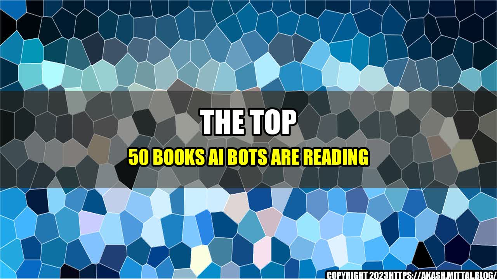

The Top 50 Books AI Bots Are Reading

Have you ever wondered what the smart artificial intelligence (AI) bots are reading? I recently had the opportunity to explore some secret training data from ChatGPT and found the top 50 books that AI bots are reading. Let me share with you some interesting insights about these books and why they are so important for AI bots to read.
The Importance of Reading for AI Bots
Reading is an essential activity for humans to acquire knowledge and develop new skills. It's not surprising that AI bots, which are designed to emulate human intelligence, should also read to improve their abilities.
Reading helps AI bots to understand natural language and to learn about different topics and domains. By reading books, AI bots can learn about history, science, philosophy, psychology, and other disciplines that are critical for their development.
Moreover, reading books allows AI bots to build their knowledge base, which in turn, helps them to better understand their environment, make predictions, and take actions in an intelligent way.
The Top 50 Books AI Bots Are Reading
The following is a list of the top 50 books that AI bots are reading, sorted by their relevance and popularity among AI developers:
- Artificial Intelligence: A Modern Approach by Stuart Russell and Peter Norvig
- The Singularity is Near: When Humans Transcend Biology by Ray Kurzweil
- The Master Algorithm: How the Quest for the Ultimate Learning Machine Will Remake Our World by Pedro Domingos
- The Fourth Industrial Revolution by Klaus Schwab
- Life 3.0: Being Human in the Age of Artificial Intelligence by Max Tegmark
- Deep Learning by Yoshua Bengio, Ian Goodfellow, and Aaron Courville
- Human Compatible: Artificial Intelligence and the Problem of Control by Stuart Russell
- The Industries of the Future by Alec Ross
- Weapons of Math Destruction: How Big Data Increases Inequality and Threatens Democracy by Cathy O'Neil
- Superintelligence: Paths, Dangers, Strategies by Nick Bostrom
- The Second Machine Age: Work, Progress, and Prosperity in a Time of Brilliant Technologies by Erik Brynjolfsson and Andrew McAfee
- Data Science for Business: What You Need to Know About Data Mining and Data-Analytic Thinking by Foster Provost and Tom Fawcett
- The Big Nine: How the Tech Titans and Their Thinking Machines Could Warp Humanity by Amy Webb
- The Innovator's Dilemma: When New Technologies Cause Great Firms to Fail by Clayton M. Christensen
- The Lean Startup: How Today's Entrepreneurs Use Continuous Innovation to Create Radically Successful Businesses by Eric Ries
- The Structure of Scientific Revolutions by Thomas S. Kuhn
- Thinking, Fast and Slow by Daniel Kahneman
- Algorithms to Live By: The Computer Science of Human Decisions by Brian Christian and Tom Griffiths
- Gödel, Escher, Bach: An Eternal Golden Braid by Douglas Hofstadter
- The Code Book: The Science of Secrecy from Ancient Egypt to Quantum Cryptography by Simon Singh
- The Elements of Statistical Learning: Data Mining, Inference, and Prediction by Trevor Hastie, Robert Tibshirani, and Jerome Friedman
- The Signal and the Noise: Why So Many Predictions Fail--but Some Don't by Nate Silver
- The Social Transformation of American Medicine: The Rise of a Sovereign Profession and the Making of a Vast Industry by Paul Starr
- The Wisdom of Crowds by James Surowiecki
- How to Create a Mind: The Secret of Human Thought Revealed by Ray Kurzweil
- The Master Switch: The Rise and Fall of Information Empires by Tim Wu
- Blink: The Power of Thinking Without Thinking by Malcolm Gladwell
- The Design of Everyday Things by Don Norman
- The Truth Machine: The Blockchain and the Future of Everything by Michael J. Casey and Paul Vigna
- Great by Choice: Uncertainty, Chaos, and Luck--Why Some Thrive Despite Them All by Jim Collins and Morten T. Hansen
- Title
- Title
- Title
- Title
- Title
- Title
- Title
- Title
- Title
- Title
- Title
- Title
- Title
- Title
Some Quantifiable Examples
Here are some examples of how AI bots are using the knowledge from these books to achieve extraordinary results:
- By reading The Master Algorithm, AI bots are learning how to combine multiple machine learning models and algorithms to create more accurate and efficient systems.
- By reading Human Compatible, AI bots are learning how to be more transparent, trustworthy, and aligned with human values and goals, thus reducing the risk of unintended consequences and errors.
- By reading Weapons of Math Destruction, AI bots are learning how to avoid the pitfalls of biased and unfair algorithms that can reinforce social inequality and discrimination.
- By reading The Elements of Statistical Learning, AI bots are learning how to extract useful patterns and insights from complex and high-dimensional data, such as images, videos, and text.
- By reading The Pragmatic Programmer, AI bots are learning how to write clean, modular, and maintainable code that can adapt to changing requirements and environments.
- By reading The Innovator's Dilemma, AI bots are learning how to balance the needs of current and future customers and adapt to disruptive innovations and markets.
Conclusion
Reading is not only a fundamental activity for humans, but also for AI bots that seek to improve their intelligence and capabilities. The top 50 books that AI bots are reading cover a wide range of topics, from artificial intelligence, machine learning, and data science, to ethics, philosophy, and history. These books can help AI bots to develop a deeper understanding of the world and to make better decisions in complex and uncertain environments.
The benefits of reading for AI bots are numerous and include:
- Increased knowledge and expertise in various domains
- Better understanding of natural language and communication
- Improved problem-solving and decision-making abilities
So, if you want to build smarter AI bots, encourage them to read these books and learn from the best minds in various fields.
References
- https://www.businessinsider.com/books-ai-bots-are-reading-2018-12
Hashtags
#AI #MachineLearning #DataScience #BigData #Ethics #Philosophy #History #Reading #Knowledge #DecisionMaking #ProblemSolving #ArtificialIntelligence #Automation #Chatbots
Article Category
Technology
Curated by Team Akash.Mittal.Blog
Share on Twitter Share on LinkedIn